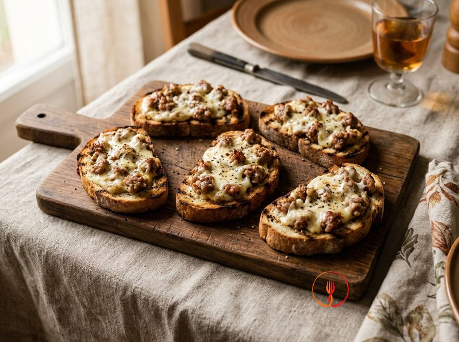

Bruschetta with Stracchino and Sausage
A different kind of bruschetta, crispy yet tasty thanks to the unmistakable flavor of the sausage, while the stracchino cheese makes the flavor more delicate.
Ingredients
- Slices of rustic bread4 pcs
- Stracchino cheese250 g
- Sausage100 g
- Ground pepperTo taste
Allergens
None of the 14 main allergens in the ingredients.
Method
- With a knife, cut the sausage casing and remove it.
- Place the sausage and the stracchino in a bowl and, using a fork, mash the ingredients until they form a single mixture.
- Spread the mixture onto the bread slices. Add a pinch of pepper.
- Bake at 170 degrees for 10 minutes.
- Serve while very hot.
- Variation: To make them even tastier, you can also add some pre-cooked pumpkin to the mixture.
Open the recipe in the app for the shopping list, ingredient sheets and nearby shops.